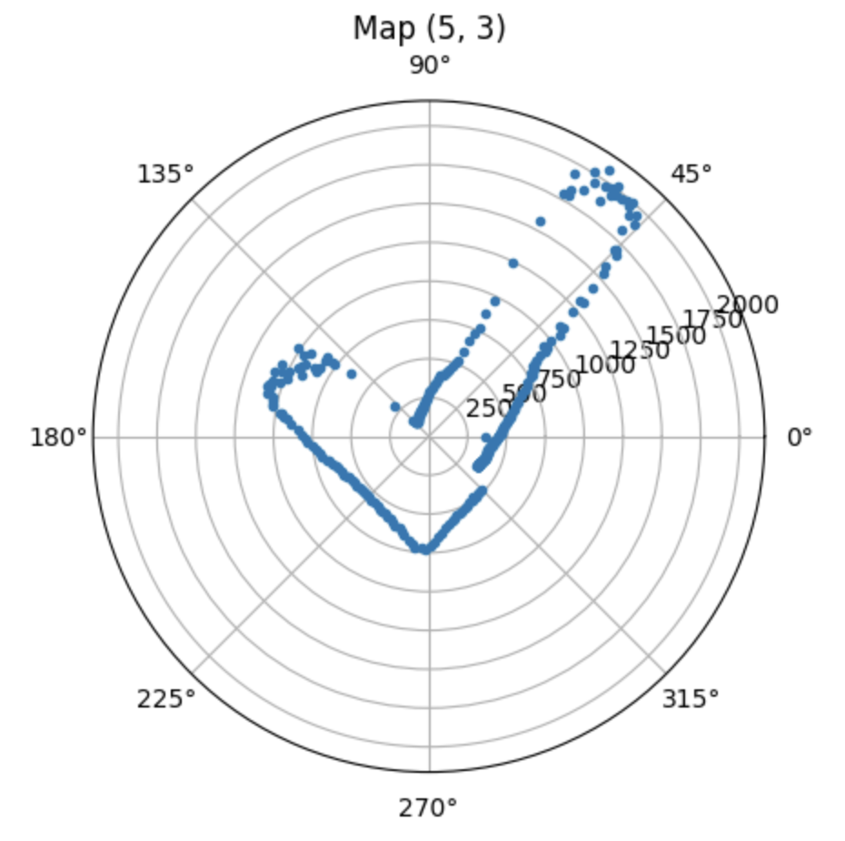
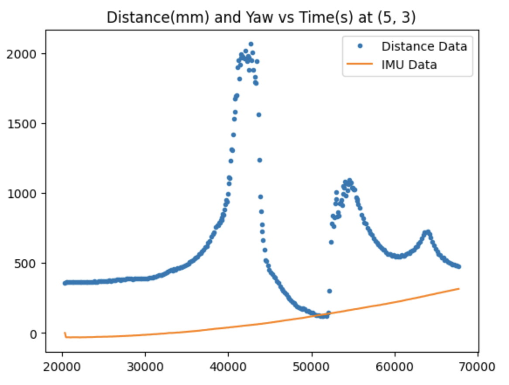
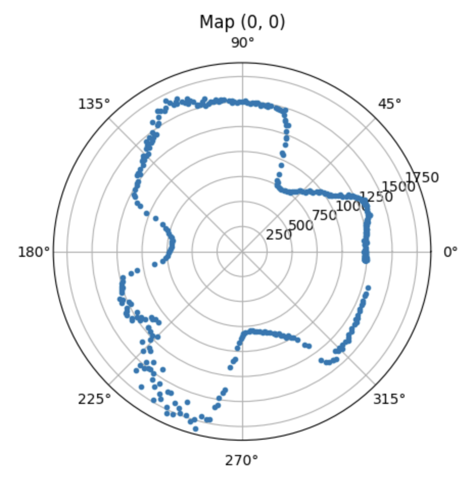
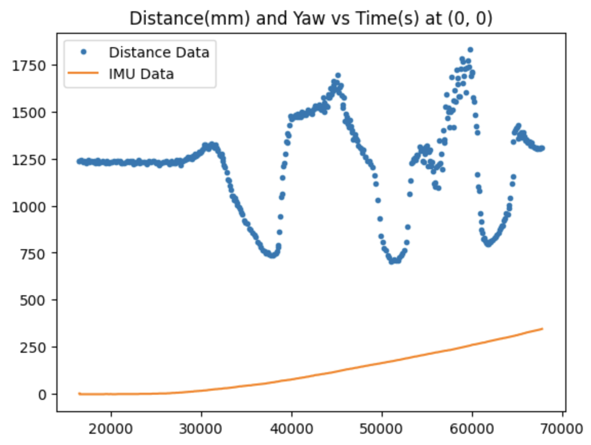
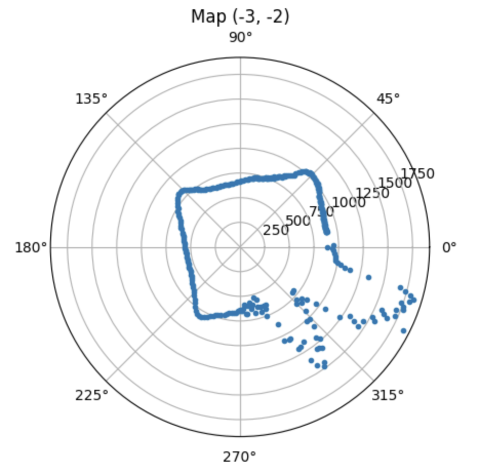
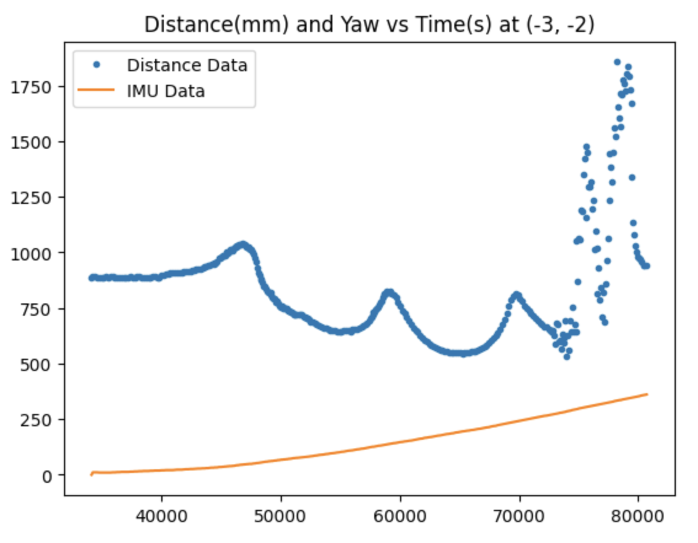
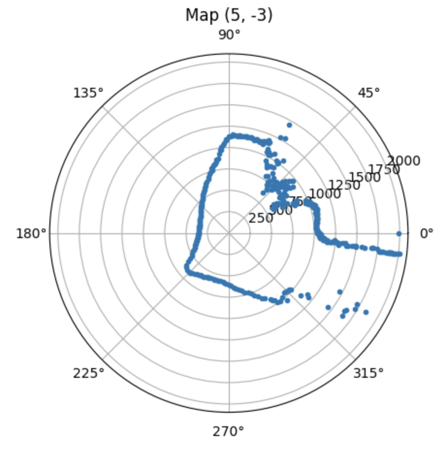
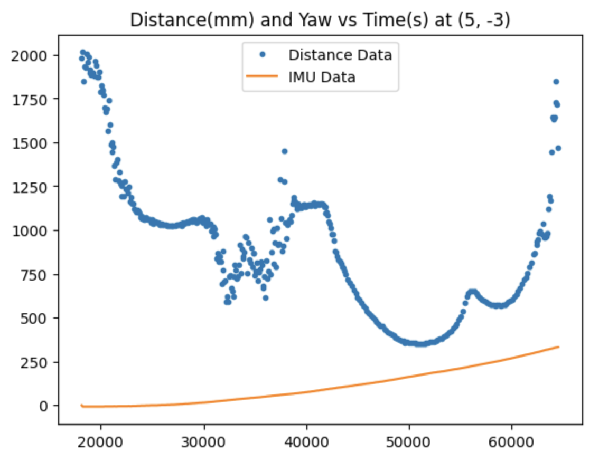
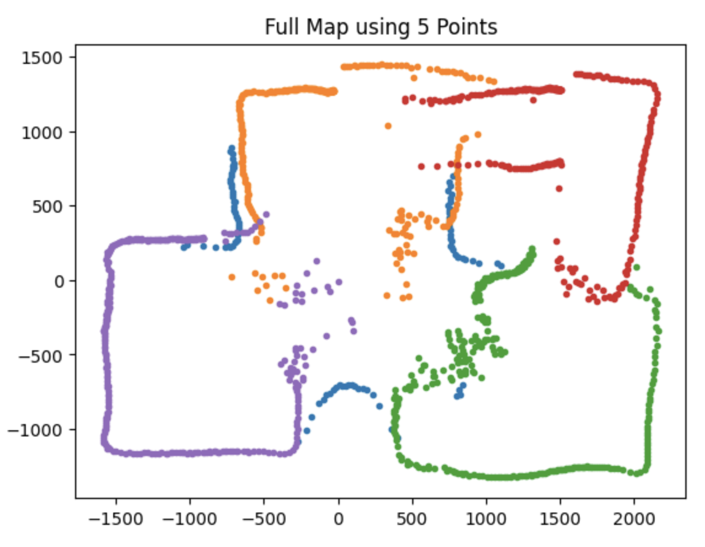
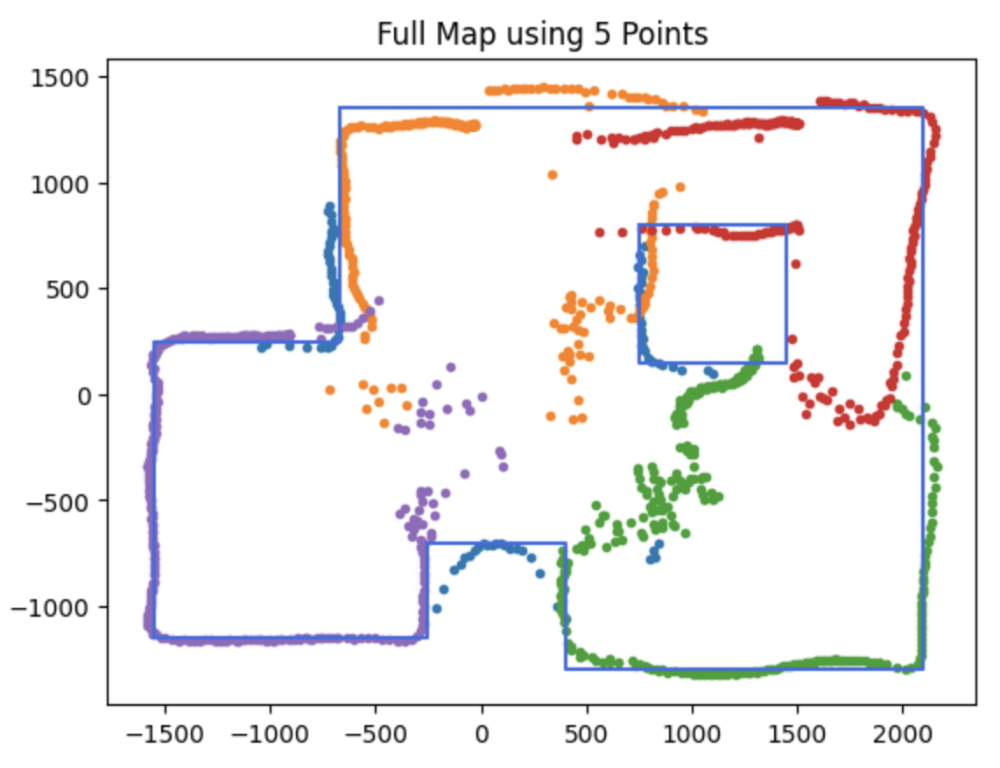

Lab 10: Grid Localization using Bayes Filter
In this lab, I will use the Time of Flight sensors and IMU on my robot to map out a static room. This is done by placing the robot at different known positions around the room and rotating it slowly in place while collecting sensor readings, similar to how LiDAR works to map its surroundings.
As you can see in my code, I found the pid error by subtracting the setpoint angular speed from the gyroscope z-axis reading. The Kp and Ki parameters are negative because when the robot starts turning, the pid error is negative, so multiplying it by the k constants outputs a positive speed for my left() function. In the video, the robot takes a moment to ramp up in speed as the error accumulator increases and then rotates at a consistent, slow speed. Since I keep track of both the ToF data and gyroscope data and send them over to my laptop, the initial slower speed doesn't have any negative effect on my mapping.
 
 
 
 
After collecting these 5 datasets, I performed some trigonometry operations to convert each point from polar to cartesian coordinates and rotate and offset it according to the location and orientation where the robot took the readings. Here is the what the final combined map looks like:

I filtered the outlier points for a cleaner map and then traced the walls and boxes detected in the map using lines.


Looking at the actual setup of the lab room, I think my robot did a good job with mapping!

Here is the code I used to graph the data: